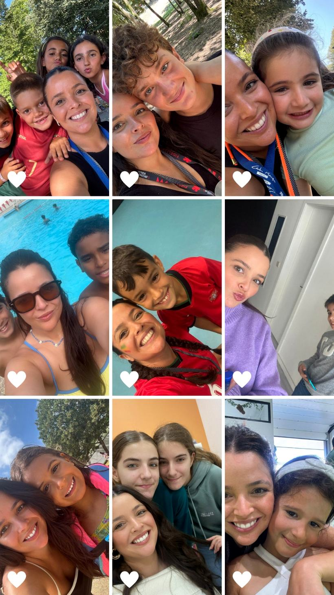

Um espaço de estudo e explicações nas Caldas das Taipas

Fundadora da Academia dos Estudos. Sou licenciada em Estatística Aplicada e Mestre em Ensino de Matemática do 3.º Ciclo e Ensino Secundário pela Universidade do Minho.
Desde 2019 que abri o meu espaço, tendo anteriormente trabalhado noutros centros de estudos. Dedico-me ao ensino e ao acompanhamento de alunos na Academia dos Estudos, um projeto que nasceu da minha paixão sobretudo pelo ensino e por ajudar crianças a crescer com boas bases académicas e também com bons valores pessoais.
Acredito que cada aluno é único e que aprender não tem de ser sinónimo de pressão ou frustração. Cada um tem o seu ritmo, as suas dificuldades e a sua própria forma de aprender. Com um irmão com TDAH diagnosticado, percebo perfeitamente e respeito as diferenças de cada um, e aqui, todos são amados e tratados de igual forma.
Ao longo destes anos, tenho acompanhado alunos de diferentes idades e níveis de ensino, procurando não só ajudá-los a melhorar os seus resultados, mas também a desenvolver confiança, autonomia e gosto pela aprendizagem.
Na Academia dos Estudos, acredito num acompanhamento próximo e personalizado, onde cada aluno é acompanhado de acordo com as suas necessidades e objetivos.
Para mim, ensinar vai muito além de explicar matéria. É conhecer cada aluno, perceber as suas dificuldades e ajudá-lo a acreditar que é capaz.
É com esta dedicação, exigência e carinho pelo ensino que continuo, todos os dias, a construir a Academia dos Estudos.
Uma relação de confiança com cada aluno e família.
Um espaço acolhedor onde é bom estudar e crescer.
Elevamos a fasquia para que cada aluno dê o seu melhor.
Temos uma equipa de dezenas de professores especializados nas áreas de: